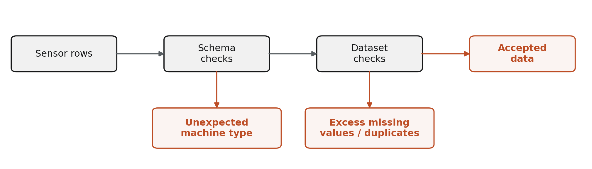

4.3 Testing data
The ODD input conditions, written as code.
schema = pa.DataFrameSchema({
"temperature": pa.Column(float, pa.Check.in_range(-40, 150)),
"vibration": pa.Column(float, pa.Check.ge(0)),
"machine_type": pa.Column(str, pa.Check.isin(["A", "B"])),
"failure": pa.Column(int, pa.Check.isin([0, 1])),
}, strict=True)
schema.validate(pd.read_csv("data/raw.csv"), lazy=True)
Also test: missing values, class balance, duplicates, train/test overlap.
Alternatives: Great Expectations, Deepchecks.
